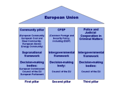
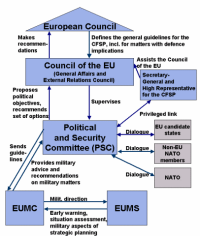
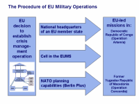

This learning object provides an overview of those European Union (EU) institutions concerned with developing and implementing the European Security and Defence Policy (ESDP). It addresses three issues: First, it explains why ESDP institutions are important and how they make the policy work. Second, it examines the functions of these institutions and their interaction within the EU. Third, it illustrates how ESDP procedures work in practice. This is done with reference to the EU's Operation Artemis, conducted in the Democratic Republic of Congo in 2003.
In this module, you will learn about those institutions that enable the EU to decide whether and how to conduct civil and military operations. You will also discover which resources the EU may rely on when conducting an operation. At the end of the lesson, you will be able to put your knowledge into practice in a role-play exercise.
At the June 1999 European Council meeting in Cologne, Germany, EU heads of state and government outlined the European Security and Defence Policy (ESDP) aimed at giving the European Union (EU) the necessary means to assume its responsibilities regarding a common European policy on security and defence, and also the ability to make decisions on the conflict prevention and crisis management tasks defined in the Treaty on European Union (TEU), that is, the Petersberg tasks. The heads of state and government agreed on institutional arrangements to ensure political control and strategic direction of EU-led Petersberg operations. At the December 1999 Helsinki Summit (and subsequent meetings), the European Council defined the roles of these new security institutions and their remit. It was decided that these institutions would provide EU members with an effective decision-making process in the event of a crisis and would also undertake, at least in part, situation and intelligence assessments and strategic planning. The institutional framework of ESDP merits attention because it provides the means by which EU member states can build a consensus on the use of civil and military capabilities, once these are in place.
- Unworkable Institutional Triangle: NATO — the WEU — the EU
- For a long time, Europe's only proper defence institution, the Western European Union (WEU), was undermined by a lack of consensus over its role. During the Cold War and the 1990s, the North Atlantic Treaty Organisation (NATO) was the main body that dealt with European defence and security; the WEU remained on the sidelines, and the EU focused on the civilian aspects of security. When the EU heads of state and government decided to give the EU a genuine security and defence dimension, they also had to establish effective decision-making mechanisms to deal with such a policy.
- Institution-Building as Part of the European Integration Process
- The building of institutions has always been an important element in the European integration process. These institutions are the result of joint norm-setting procedures by EU member states. By establishing an institutional setting for ESDP, EU member states will be better able to develop a common approach to European security issues and to the questions why, when, and where to intervene in a crisis. Proper ESDP institutions will also contribute to the deepening of the EU integration process and to the establishment of a defence culture presently still lacking in the EU.
- EU Institutions Integrate Different Security Cultures
- The choice of the EU as a vehicle for furthering regional security and defence enables the participation and commitment of 25 European states on an equal basis. The EU includes non-NATO states and neutral countries. Its broad range of decision-making mechanisms allows it to take on board the security interests and defence capacities of all its members. The EU considers ESDP to be an open project and welcomes the participation of EU candidate countries, as well as European NATO members that are not members of the EU, in EU-led missions.
- Cohesion After the 2004 Enlargement Round
- The institutional factor has gained in importance since the latest round of EU enlargement in May 2004. Formal institutions are essential, if member states are to reach a consensus on security issues or on the conduct of a crisis management operation.
Before continuing, please complete the exercise below.

ESDP seeks to provide the EU's Common Foreign and Security Policy with additional substance and a clear profile. Accordingly, all political and military ESDP bodies are firmly placed within the second intergovernmental pillar of the EU, in which the Council of the EU is the main decision-making body. In this context, the role of another institution needs to be emphasized, namely that of the European Council. The European Council brings together the heads of state and government of the EU member states and the president of the European Commission at least four times a year and makes major political decisions on the institutional and policy development of the EU. The consensus-based political direction from the highest government levels has proven to be an essential part of the CFSP pillar, which covers a policy area characterized by national prerogatives. While the European Council may not be involved in ESDP decision-making processes on a day-to-day basis, it defines the general guidelines for CFSP and ESDP matters that the Council of the EU then implements.


- Council of the European Union
- The Council of the EU meets in the form of the General Affairs and External Relations Council (GAERC; formerly known as the General Affairs Council) and is made up of the foreign ministers of EU member states. Its decisions cover all CFSP and ESDP-related matters and are made on the basis of the general guidelines defined by the European Council. The GAERC consults with the ministers of defence, and it exercises political control over all EU-led operations. The Council of the EU is supported by its Secretary-General and High Representative for the CFSP (SG/HR), who formulates, prepares, and implements political decisions and plays a central role in enhancing the EU's foreign relations. The Council of the EU's decisions relating to crisis management tasks are made in accordance with Article 23 of the Treaty on European Union (TEU), requiring unanimity in the Council of the EU for decisions with military or defence implications. Member states may abstain from a vote and are then not obliged to apply the ensuing decision. They also retain the right to decide if and when their national forces will be deployed.
- Political and Security Committee (PSC)
- The PSC (also referred to by its French abbreviation, COPS) is the key element of ESDP. It consists of the Permanent Representatives of the member states, who perform the day-to-day duties and meet two to three times a week in Brussels. The PSC operates under the auspices of the Council of the EU (which alone is able to make legally binding decisions) and is usually chaired by the Permanent Representative of the member state holding the EU presidency. The PSC deals with a broad range of CFSP and ESDP-related issues and defines the EU's response to a crisis. It monitors international developments and the implementation of agreed policies. When it comes to a military response to a crisis, the PSC, under the responsibility of the Council of the EU, exercises political control and defines the strategic direction of the operation. It functions as a coordination agency and consultation forum on ESDP for a number of EU bodies, NATO institutions, and third-party states. It maintains a privileged link with the SG/HR and interacts with the Military Committee of the European Union (see below).
- European Union Military Committee (EUMC)
- The EUMC is the EU's most senior military body and a forum for military consultation and cooperation between EU member states. It is made up of the 25 Chiefs of Defence Staff. Its main task is to provide the PSC with consensus-based advice on military matters and to direct all military activities within the EU framework. A four-star flag officer from an EU member state, elected by the 25 Chiefs of Defence and appointed by the Council of the EU for a period of three years, chairs the committee and attends sessions of the Council of the EU when defence-related decisions have to be made.
- European Union Military Staff (EUMS)
- Under the direction of the EUMC, the EUMS provides military expertise, particularly with regard to the execution of military crisis management operations. It is composed of some 140 officers seconded from EU member states, and it performs three main functions: early warning, situation assessment, and strategic planning. It also oversees the process of delivering the military capacity identified in the Helsinki Headline Goal.
Before continuing, please complete the three exercises below.


- The EU can conduct an operation by drawing on the operational planning carried out by the national headquarters of an EU member state or by a multinational headquarters designated by the EU, such as Eurocorps.
- If a joint civil/military response is required and when no national headquarters is identified, the EU can draw on the capacity of a cell with civil and military components in the EUMS. This cell has yet to be formally established and will not be a standing headquarters, but rather a capacity for rapidly setting up an operations centre for a particular mission.
- The EU can draw on planning conducted by NATO's military staff for multinational operations. The December 2002 Berlin Plus arrangements between NATO and the EU offer the EU access to NATO planning capabilities for EU-led crisis management operations. In order to improve the preparation of operations by drawing on NATO assets, the EU has deployed a small group of operational planners to the Supreme Headquarters Allied Powers Europe (SHAPE), NATO's military planning headquarters. This group will work to ensure a smooth relationship between the EU and NATO on missions conducted under the Berlin Plus arrangements.
Before continuing, please complete the exercise below.
The previous section described the options available to the EU in conducting a crisis management mission. When it comes to deploying troops, we have mentioned that EU member states retain the right to decide whether or not their national forces are made available, and when. At the same time, the EU welcomes contributions by non-EU states to both its civil and its military crisis management operations. The following paragraphs focus on the EU's arrangements regarding the participation of third-party states in EU-led operations.
In December 1999, at the European Council meeting in Helsinki, the EU already provided for the participation of non-EU states in EU-led crisis management operations. The arrangements were formulated in more detail at the December 2000 European Council meeting in Nice. They concern, first and foremost, European non-EU NATO members and countries that are candidates for accession to the EU. Since the latest round of EU enlargement in May 2004, the countries belonging to one or both categories are Bulgaria, Iceland, Norway, Romania, and Turkey. Contact between the EU and these third-party states has been institutionalized at the ministerial level, as well as within the framework of the PSC and EUMC. Meetings are held at regular intervals and cover the full range of security, defence, and crisis management issues. The permanent exchange of views allows the EU to take into account the interests and concerns of European non-EU allies when it considers the options of a response to a crisis.
- If the operation is conducted using NATO assets and capabilities, European non-EU NATO members may, if they wish, participate in the operation. They are involved in the planning of and the preparations for the mission according to NATO procedures.
- If the operation does not require recourse to NATO assets and capabilities, European non-EU allies may be invited to participate, depending on a decision of the Council of the EU.
- Other, non-NATO countries — namely Russia, Ukraine, those European states with which the EU maintains a political dialogue, and other interested states, such as Canada — may be invited to participate, depending on a decision of the Council of the EU.
For every crisis management operation, the PSC, together with the EUMC, is charged with evaluating contributions. In terms of day-to-day operational management, non-EU states have the same rights and obligations as EU member states participating in the operation. This is done through the Committee of Contributors, which includes all EU member states, irrespective of whether or not they are taking part in the operation, and all contributing states.
In 2003, the EU engaged in a military operation in the Democratic Republic of Congo (DRC). This mission was a test case for the EU decision-making processes. In assuming military responsibility in the DRC, the EU chose to conduct an operation without drawing on NATO's assets and capabilities. The command and control capabilities were provided by an EU member state, namely France. Operation Artemis therefore serves to illustrate in practice both EU decision-making procedures and the "framework nation" model.
Now that you understand the institutional set-up of the EU, you can put your knowledge into practice in the following exercise: Imagine that you are an EU press officer. When Operation Artemis is terminated on 1 September 2003, you convene a press conference. After a speech given by the High Representative for the CFSP, you have to answer three questions from reporters.
 Before going to the press conference, you may
want to learn more about Operation Artemis on
the Council of the EU's website.
Before going to the press conference, you may
want to learn more about Operation Artemis on
the Council of the EU's website.
- The authority to make legally binding decisions on the launching and implementation of an EU crisis management mission remains firmly with the EU member states.
- The Council of the EU, meeting in the form of the General Affairs and External Relations Council (GAERC), is the political authority that oversees all EU-led missions.
- On a managerial level, the key element in ESDP is the Brussels-based Political and Security Committee (PSC), which meets two to three times a week. It deals with a broad range of ESDP-related issues, defines the EU's response to a crisis, and acts as a coordination agency and consultation forum with a number of other ESDP and EU bodies, NATO institutions, and third-party states.
- Once the Council of the EU has decided to establish a crisis management operation, the EU has three options: It may draw on a national headquarters of an EU member state; it may draw on the capacity of a cell within the European Union Military Staff (EUMS); or it may conduct the operation with recourse to NATO assets and capabilities.
- The EU welcomes the contribution of non-EU states to both military and civil missions and has established mechanisms for regular consultation with European non-EU NATO members.
You have completed this learning object.
You have completed this learning object.
Please click on the button to close this window.